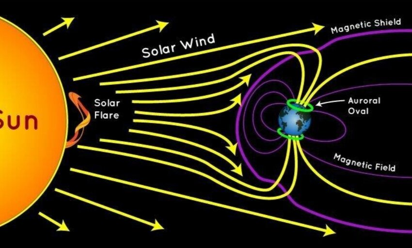

{kind=link}
Blog Comments
Type your note, and hit enter to add it
Martha
Type your note, and hit enter to add it
Johny
Type your note, and hit enter to add it
Johny
10/12/2024 by Josh Ruddock
The aurora borealis was visible for a few hours last Friday night across New England, causing
people to go outside and see the beautiful pink sky for themselves. Those who stayed up late
even saw green hues close to midnight. I personally had no idea it was happening, so when I
went out in my driveway I found out only when was confronted by the illuminated sky.
While the event was visible with the naked eye as a clearly abnormal pink glow in the night sky,
iPhone’s “Night Mode” setting automatically adjusts photos taken in low lighting to be brighter,
leading to intense and stunning captures of the event.
When intense eruptions of radiation from the sun’s surface known as solar flares occur, the
continuous flow of protons and electrons from the sun’s atmosphere known as solar wind is

intensified by the energy produced. Solar winds are always deflected to the North and South
poles by Earth’s magnetic field (produced by the movement of molten iron in its outer core),
causing the Northern Lights when these particles collide with gasses in Earth’s upper
atmosphere creating flashes of light.
However, these flashes become more abundant and intense when the additional energy from
solar flares reach Earth. In the weeks leading up to the event, several X-Class solar flares
occurred, with the most intense happening on October 3rd.
This intense energy strongly enhanced the Northern Lights, causing them to be visible from
many places they are usually unviewable from. This is how the event was able to illuminate the
dark night sky of New England on October 11th.
Type your note, and hit enter to add it
Martha
Type your note, and hit enter to add it
Johny
Type your note, and hit enter to add it
Johny